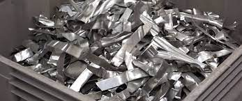
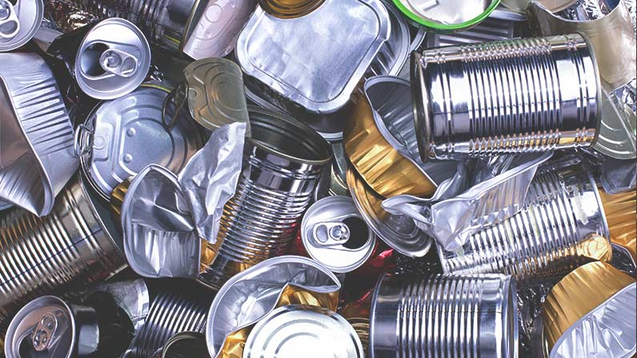
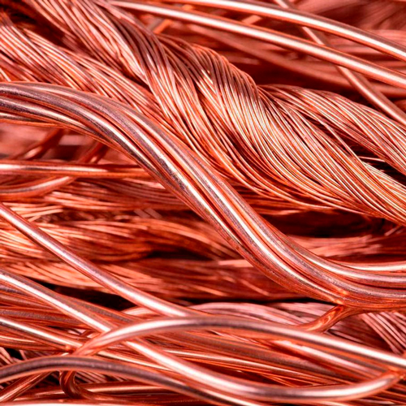
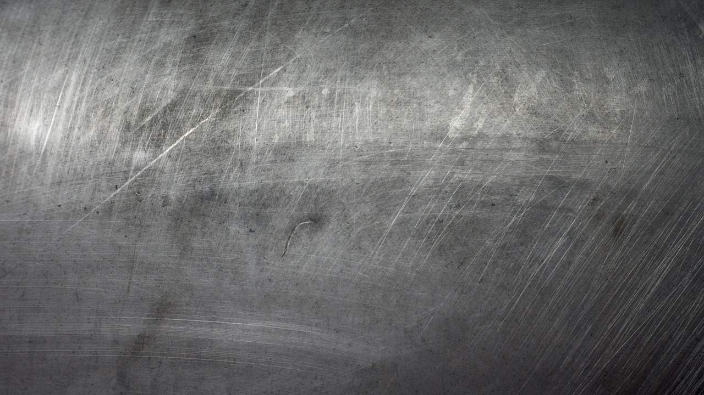

Recicláveis
Alumínio

- A história do alumínio e de suas múltiplas aplicações no mundo moderno é remota. Apesar de ser o mais abundante metal do planeta, ele não se encontra naturalmente na forma metálica e foi somente em 1824 que o dinamarquês Hans Christian Oersted conseguiu isolar o alumínio na forma como é hoje conhecido. Atualmente possui inúmeras aplicações como na fabricação de panelas, janelas, peças de carro, equipamentos eletrônicos, latas de bebidas etc.
O alumínio é um metal reciclável que gera bom retorno financeiro para os trabalhadores e empresas que atuam nesta área. O processo de reciclagem consiste na reutilização do alumínio para a confecção de novos produtos.
Grande parte do alumínio que é reciclado no Brasil tem como origem as latas de refrigerantes, cervejas e sucos. Porém, outros produtos fabricados de alumínio podem ser reciclados como, por exemplo, esquadrias, janelas, portas, componentes de eletrodomésticos, sobras das indústrias, estruturas de boxes, cadeiras, mesas e etc.
Composição
O alumínio é obtido a partir do minério bauxita. Vale ressaltar que o processo de extração deste minério, assim como dos demais, é atividade que provoca intenso impacto do solo e dos corpos hídricos. Para extrair o alumínio é feito um processo de refino da bauxita que resulta em um pó branco, parecido com o açúcar, a alumina. Em seguida a alumina passa por um processo eletroquímico e é transformada em alumínio.
Vantagens para o meio ambiente
As latas de alumínio são usadas em larga escala pelas indústrias. Caso estas latinhas não fossem recicladas, seus prováveis destinos de descarte seriam os aterros sanitários ou, na pior das hipóteses, rios e terrenos. Como elas levam entre 100 e 500 para se decompor no solo, a poluição gerada por elas seria imensa com grandes prejuízos ambientais. Portanto, a reciclagem destas latas é de fundamental importância para o meio ambiente.
Vantagens sociais e econômicas
Milhares de catadores de materiais recicláveis, organizados em cooperativas, vivem atualmente desta atividade. Grande parte da renda destes trabalhadores tem como origem a reciclagem de latinhas de alumínio. Portanto, esta atividade é importante na geração de emprego e renda no Brasil. Vale lembrar também que há no Brasil muitas empresas de reciclagem de alumínio. Estas empresas também geram muitos empregos.
Vale ressaltar também que o processo de reciclagem de alumínio é muito mais barato e consome menos energia do que a produção primária deste metal (usando a mineração da bauxita, que é a matéria-prima).
Processo de reciclagem do alumínio (etapas)
1º – As latas e outros materiais de alumínio, que já foram usados e descartados, são encaminhados para a reciclagem. A coleta seletiva do lixo é de fundamental importância nesta etapa inicial, pois separa o lixo orgânico do reciclável.
2º – Ocorre a separação das impurezas;
3º – Todo alumínio é picotado;
4º – Este material já limpo é fundido a 700ºC;
5º – O processo de fundição (derretimento) gera o alumínio líquido;
6º – O alumínio líquido é transformado em lingotes ou chapas de alumínio. Estes são vendidos para as indústrias que fabricam produtos e embalagens de alumínio. Assim, o material retorna a cadeia produtiva.
Do descarte a reutilização (fabricação de produtos com alumínio reciclável), o processo dura de 30 a 40 dias.
Você sabia?
– A reciclagem de um quilo de alumínio economiza a extração de cerca de quatro quilos do minério bauxita (matéria-prima).
– O processo de reciclagem de alumínio utiliza apenas cerca de 7% da energia elétrica usada na produção primária deste metal.
– Para gerar um quilo de alumínio são necessárias cerca de 75 latinhas de refrigerante, suco ou cerveja.
Reciclagem de alumínio no Brasil
Entre os países em que a reciclagem deste metal não é obrigatória, o Brasil é o maior reciclador de alumínio do mundo. Cerca de 98% do alumínio produzido em nosso país volta para a cadeia produtiva através do processo de reciclagem. São cerca de 360 mil toneladas de alumínio que passam pelo processo de reciclagem em nosso país anualmente. Este dado positivo pode ser explicado pelo fato do alumínio ser facilmente coletado, seu valor de mercado e também pelo aumento da consciência ambiental dos brasileiros.
Este metal é 100% reciclável, em número ilimitado de vezes e quando se recicla o alumínio, são economizados 95% da energia que foi necessária para produzi-lo da primeira vez..
Latas

- Boa parte do alumínio destinado à reciclagem é proveniente das embalagens, em especial latas de bebidas. As latinhas recuperadas são transformadas em lingotes que posteriormente são empregados na fabricação de novas latas e inúmeros outros produtos de alumínio. Atualmente o Brasil é o país que mais recicla latas alumínio no mundo, porém, vale destacar que isso é conseqüência da falta de oportunidade no mercado de trabalho, se apresentando como alternativa de subsistência para grande parte da população. Mesmo aumentando o material destinado à reciclagem, não houve redução na extração do minério bauxita, atividade esta de intenso impacto ambiental como já mencionado acima.
- LATAS DE ALUMÍNIO Felizmente, o Brasil é o maior reciclador de alumínio desde 2001 – e parte desse sucesso se deve exatamente por conta das latinhas. Em 2016, nosso país reciclou 97,7% das latas produzidas por aqui – o equivalente a cerca de 280 mil toneladas de alumínio reaproveitadas. Com este índice, o país ficou à frente do Japão e Estados Unidos, por exemplo, que reciclaram 76% e 64%, respectivamente, das latinhas de alumínio produzidas em seus territórios no mesmo ano. Um dos grandes benefícios da reciclagem do alumínio é que ela serve de fonte de renda para milhares de brasileiros, que revendem as latinhas para que as próprias empresas produtoras de alumínio criem novos produtos com custos mais baixos. Outro ponto positivo do alumínio reciclado é que os materiais feitos a partir dele possuem a mesma qualidade de um novo. Graças aos esforços da cadeia de reciclagem (fabricantes de chapas, de latas, envasadores de bebidas, cooperativas e recicladoras) e do governo para a conscientização da população, a reciclagem de latas de alumínio é um programa de sucesso com grande influência social, econômica e ambiental. Em 2016, apenas a etapa da coleta (compra de latas usadas) injetou cerca de R$ 947 milhões na economia nacional, gerando emprego e renda para milhares de pessoas, de acordo com dados da Abal – Associação Brasileira do Alumínio. Imagem - Latas diversas. Foto: photka/shutterstock.com Latas diversas. Foto: photka/shutterstock.com E AS LATAS DE AÇO? O aço é um metal totalmente reciclável, e pode voltar ao mercado em diferentes formas, desde carros, geladeiras e eletrodomésticos até acessórios variados, como tesouras e maçanetas. De acordo com a ONG Cempre – Compromisso Empresarial para Reciclagem, 46,7% de todas as latas de aço consumidas no Brasil em 2015 foram recicladas. Fazem parte desse montante, latas de bebidas; alimentos, como ervilha, milho e sardinha; tintas; massa corrida e produtos químicos. Aproximadamente 200mil toneladas de latas de aço usadas retornaram para o processo de reciclagem no país, e este índice vem aumentando graças à ampliação de programas de coleta seletiva e educação ambiental. LATAS DE AEROSSOL E SPRAYS SÃO RECICLÁVEIS? As latas de aerossol e sprays não fazem parte do ciclo comum de reciclagem de metais. Seu conteúdo nem sempre é tóxico, porém, na maioria das vezes é considerado um composto orgânico volátil. Existem cooperativas especializadas nesse tipo de material, mas são um número inexpressivo. Para se ter ideia, menos de 1% desse tipo de embalagem é reciclado em nosso país. Por aqui, ainda não existe um programa consolidado de logística reversa de embalagens de aço. O melhor a fazer é evitar o uso de produtos que venham em latas deste tipo. Enquanto a reciclagem de lata aerossol não é acessível, a Associação Britânica de Fabricantes de Aerossol explica os cuidados mais importantes ao lidar com estas latas.
Tipos de latas
Cobre

- Cobre é um material utilizado desde os primórdios da evolução da raça humana, destacando-se como um dos elementos mais importantes dentro da cadeia de produção industrial. Em quantidade, o cobre só é menos utilizado do que o ferro e o alumínio e faz parte da produção de milhares de produtos que utilizamos em nosso cotidiano. Encontrado em sua forma bruta na natureza, o cobre é um metal muito versátil que pode ser transformado em diversos objetos por meio da aplicação do calor. Sua extração não é muito fácil e se dá pela escavação da terra, o que acaba colaborando para o desmatamento de florestas e o aumento da poluição. Para minimizar esses impactos ambientais, a reciclagem do cobre se destaca como uma ação muito importante para a sociedade, uma vez que diminui consideravelmente a necessidade de extração, protegendo florestas e outras riquezas naturais. Como é feita a reciclagem do cobre? O cobre é um material extremamente fácil de reciclar, e acredita-se que desde seus primeiros usos ele já tenha passado por este processo. Especialistas estimam que cerca de 80% de todo o cobre utilizado no mundo passou ou passará por algum processo de reaproveitamento, já que ele não é muito abundante na natureza. Cerca de 85% de todo o material pode ser reutilizado, sendo que seu processo de reciclagem é bastante econômico e quase não gera resíduos. Como consequência, a reciclagem do cobre garante uma excelente lucratividade para as empresas, além de economia na extração. Reciclar o cobre também agiliza os processos de produção e facilita a compra pela indústria — que utiliza o metal em cabeamentos, motores, aparelhos eletrônicos, computadores, na construção civil e diversos outros itens. Qual é a importância da reciclagem do cobre? A manipulação do cobre proporciona diversas aplicações industriais, sendo que o material está presente em diversos equipamentos e produtos que são utilizados no cotidiano de muitas pessoas. A reciclagem do cobre garante que seu uso continue sendo possível por muito tempo, já que sua presença na natureza é escassa. Além disso, o processo agiliza e diminui os custos da produção industrial, já que a reciclagem do cobre é muito mais fácil do que sua extração. Há economia no transporte, no armazenamento e também não há tanta necessidade de investimentos em novas formas de separar o material bruto disponível na natureza. Em geral, as empresas também preferem utilizar o cobre reciclado porque todo o processo é feito de forma rápida e barata.
Metal

- Os metais possuem elevada durabilidade e resistência mecânica e são utilizados para a fabricação de inúmeros itens, como latas, móveis, peças automotivas, utensílios de cozinha, fios elétricos, etc. Os metais são classificados em dois grandes grupos, de acordo com a sua composição: ferrosos (basicamente ferro e aço) e não ferrosos (alumínio, cobre, chumbo, níquel, zinco). A reciclagem dos metais é uma atividade bastante eficiente, pois o metal pode ser reciclado inúmeras vezes, além disso, o metal reciclado tem praticamente todas as propriedades do metal comum. Ferro-velho. Foto: llucky78 / Shutterstock.com O processo de reciclagem do metal depende primeiramente das fases de coleta e separação dos materiais. Os resíduos metálicos coletados são separados nos centros de triagem entre ferrosos e não ferrosos e também por tipo e características (alumínio, cobre, ferro, aço, etc.). Como os metais ferrosos possuem propriedades magnéticas, sua separação dos demais resíduos pode ser feita por meio do uso de eletroímãs. Os resíduos já separados são prensados, classificados e encaminhados para as estações de reciclagem específicas. Nessas estações os resíduos são livrados das impurezas, triturados, derretidos e transformados em novos produtos. A reciclagem dos metais não ferrosos desperta maior interesse devido ao maior valor de sua sucata, mas a reciclagem de sucatas de ferro e aço também é bastante realizada, principalmente nas usinas siderúrgicas e indústrias de fundição, que utilizam a sucata ferrosa como matéria-prima. A maior parte dos resíduos metálicos pode ser reciclada, como as latas de alumínio e aço, arames, tampinhas de garrafas, panelas, fios, pregos, tubos e canos, janelas, portas, portões, embalagens metálicas e muitos outros. Entre os metais não recicláveis estão os clipes, grampos, esponjas de aço, latas de tinta e de combustível. O aço está entre os materiais mais reciclados mundialmente. O mercado de sucata de aço é bastante sólido em todo o mundo, sendo que as próprias indústrias que utilizam o aço como matéria-prima estimulam a coleta e a reciclagem deste material, pois elas precisam da sucata para fazer um novo aço. O aço reciclado volta ao mercado em forma de automóveis, vigas para a construção civil, arames, vergalhões, latas e outros produtos. Os novos produtos não apresentam perda de qualidade em relação ao aço original.